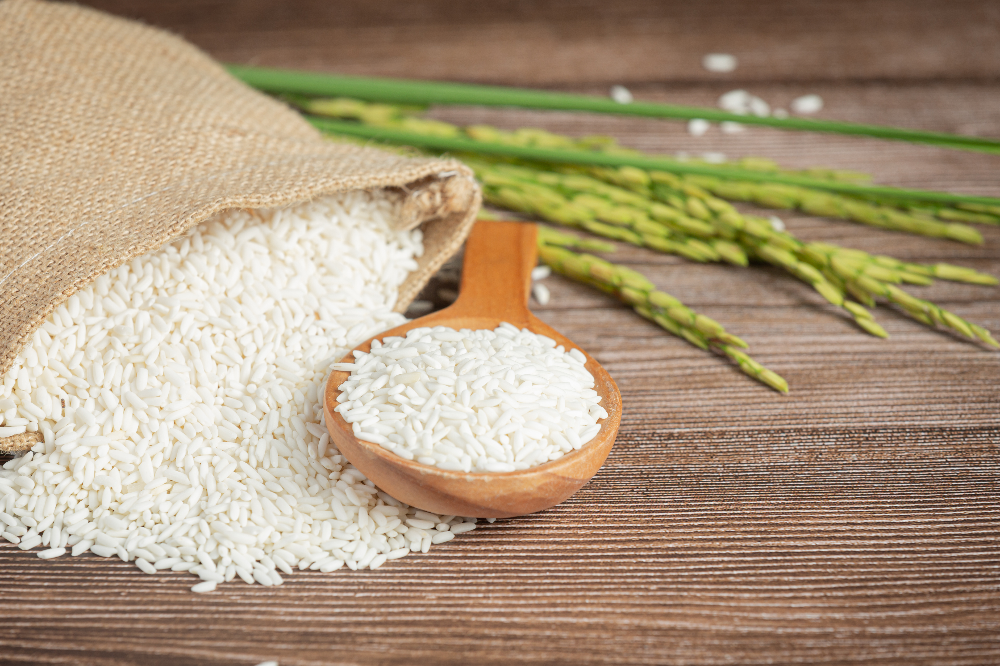

Rp90.000
Beras merupakan bahan pokok utama masyarakat Indonesia. Produk ini digunakan untuk memasak nasi setiap hari sehingga permintaannya sangat tinggi. Beras premium memiliki kualitas lebih baik dengan tekstur pulen dan aroma yang lebih wangi. Harga beras rata-rata sekitar Rp12.000–Rp14.000 per kg di pasar Indonesia